La resistencia al corte de un suelo viene dada por:
Donde '$ y $\phi'$ son parámetros intrínsecos del suelo, mientras que $\sigma' = \sigma - u$ dependerá de las variaciones de los esfuerzos totales debidos al efecto de la presión de poros ($).

Relación entre la precipitación media mensual del Valle de Aburrá y los movimientos en masa en un período entre 1960-2018.


En la práctica, se utilizan datos históricos de lluvias y correlaciones con eventos de fallas para definir umbrales críticos de lluvia que pueden desencadenar deslizamientos.
Tomado de SIATA
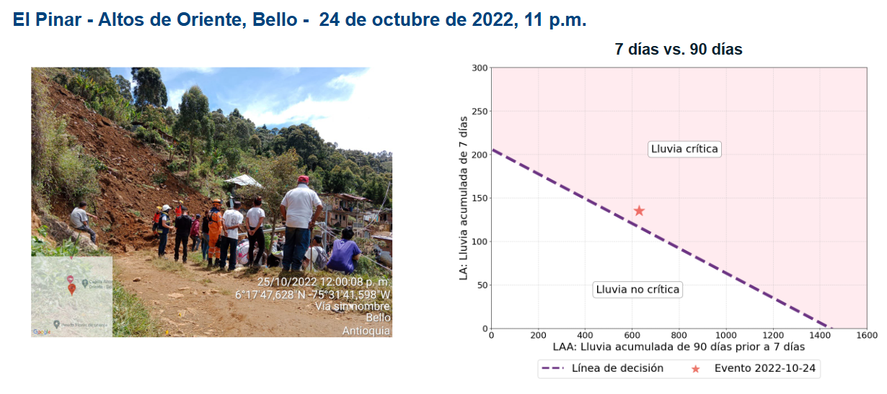
La lluvia también se puede monitorear a diferentes escalas temporales y espaciales.
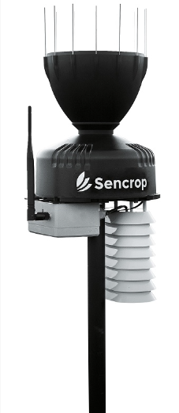
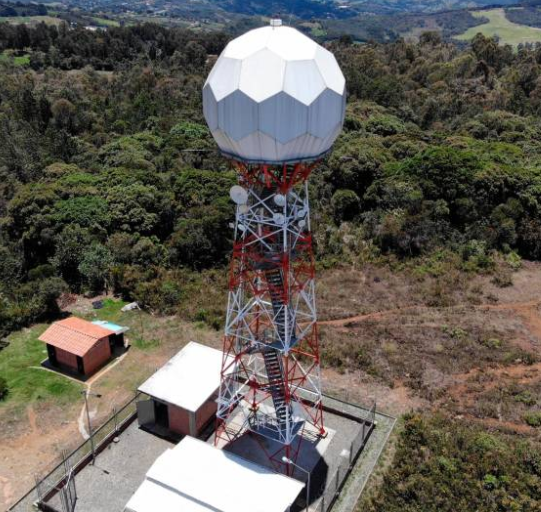
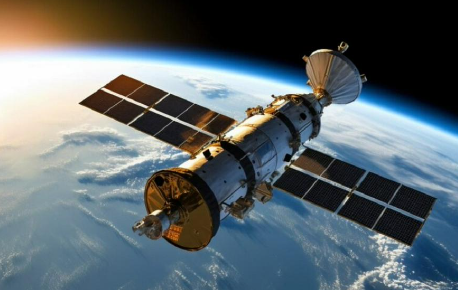
Es el instrumento tradicional más utilizado para medir la cantidad de lluvia que cae en un área específica durante un período de tiempo determinado.
Mide la cantidad de precipitación acumulada en milímetros (mm) durante un período de tiempo. 1 mm de precipitación equivale a 1 litro de agua caída sobre una superficie de 1 metro cuadrado.
Los pluviómetros son ideales para proyectos geotécnicos en sitios específicos, donde se requiere un monitoreo preciso de la lluvia que cae directamente sobre una zona propensa a deslizamientos, o zonas con estructuras geotécnicas.
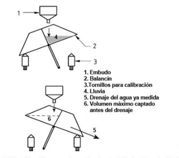
Mecanismo de funcionamiento de un pluviómetro
La cantidad total de agua caída en un período específico.
La cantidad de agua que cae en una unidad de tiempo (mm/h). Esta variable es crítica para predecir posibles inundaciones o deslizamientos.
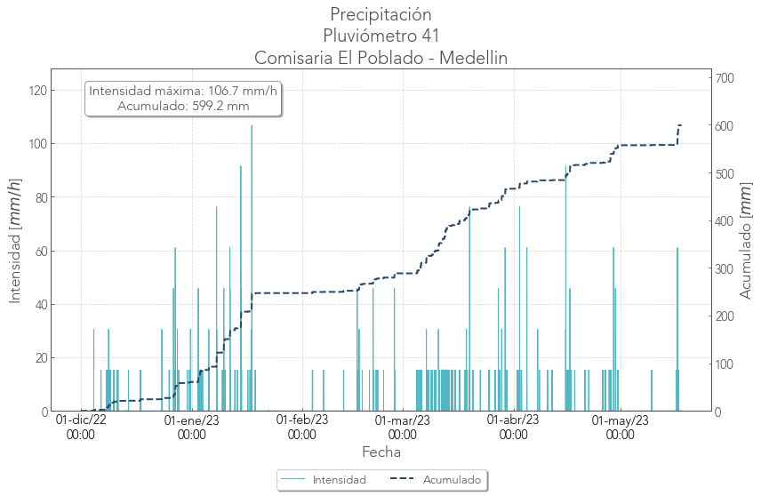
Datos típicos de un pluviómetro. Tomado de SIATA.
La cantidad de eventos de lluvia en un período determinado.
El tiempo durante el cual ocurre la precipitación.
Los patrones de cómo la precipitación varía durante un evento de lluvia.
Datos típicos de un pluviómetro. Tomado de SIATA.
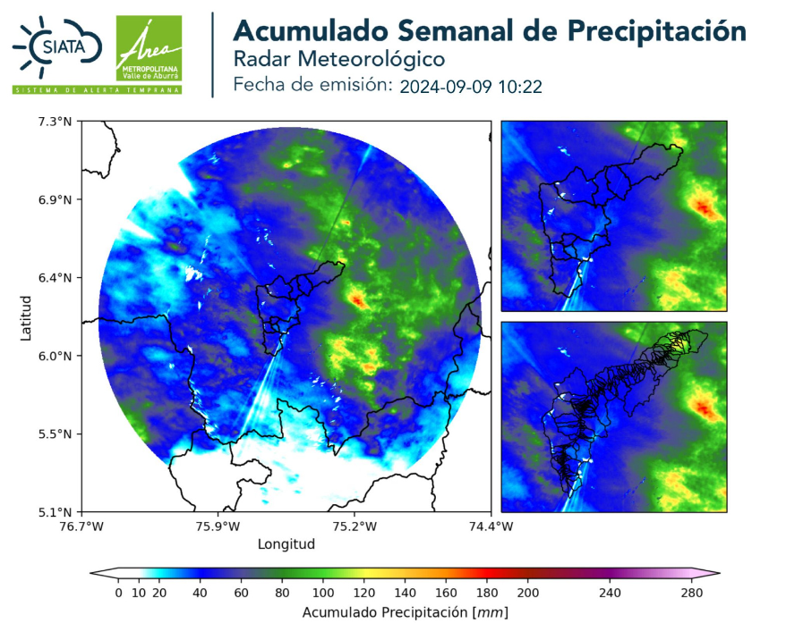
El radar meteorológico emite pulsos de ondas de radio hacia la atmósfera. Estas ondas viajan hasta encontrar partículas (como gotas de lluvia o nieve), que reflejan parte de la energía de vuelta hacia el radar.
El tiempo que tardan las ondas en regresar permite calcular la distancia a la que se encuentran las partículas, mientras que la intensidad del eco refleja la cantidad y tamaño de las partículas.
Se calcula midiendo el tiempo que tarda el eco en regresar al radar.
Cuanta más energía es reflejada, mayor es la densidad de las partículas, lo que indica precipitación más intensa.
Detecta si las partículas se acercan o se alejan, permitiendo calcular la velocidad del viento dentro de las tormentas.
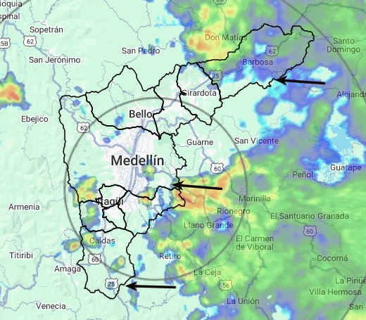
Evento de precipitación. Tomado de SIATA.
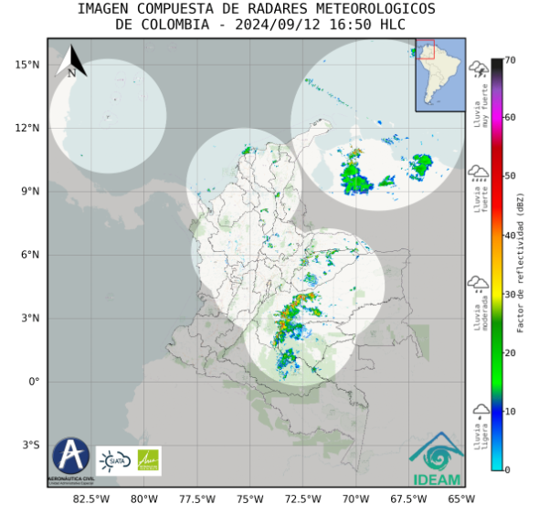
En Colombia existe una composición de radares. Tomado del IDEAM.
La variable más importante que mide un radar meteorológico. Indica la cantidad de energía reflejada por las partículas. Se mide en decibelios (dBZ), donde valores más altos corresponden a lluvias más intensas.
Mediante el efecto Doppler, el radar mide la velocidad de las partículas que se mueven hacia o desde el radar, lo que ayuda a determinar la dirección y fuerza del viento dentro de una tormenta.
Se puede estimar la cantidad total de lluvia acumulada en un área al integrar las mediciones de reflectividad a lo largo del tiempo.
Diferentes patrones de reflexión pueden ayudar a distinguir entre tipos de precipitación (lluvia, nieve, granizo).
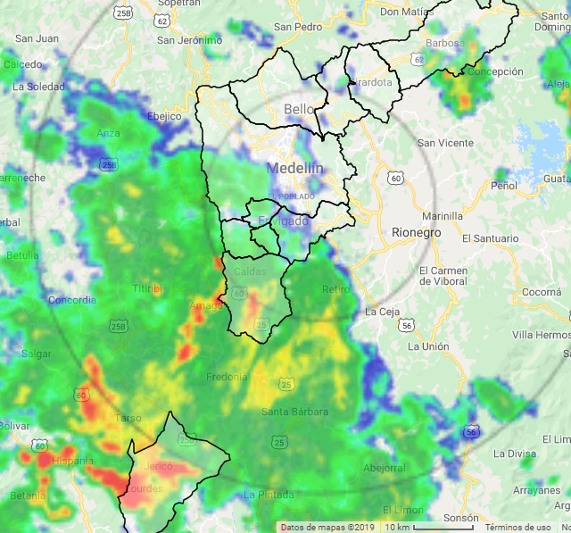
Sur - Norte
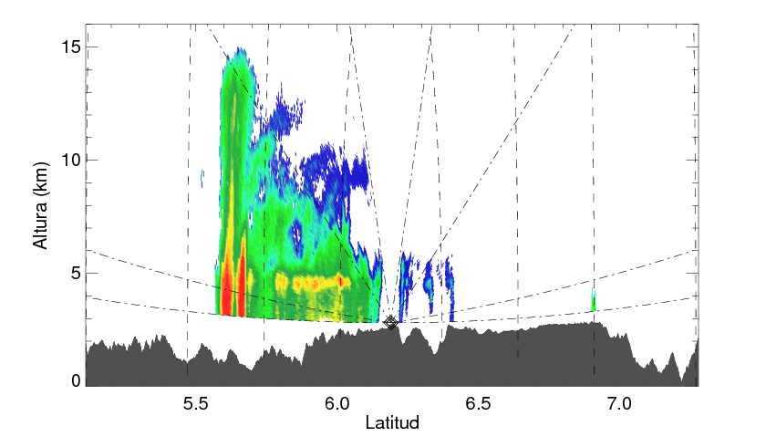
Célula aislada intensa
Los sensores satelitales de precipitaciones miden diversas características de la lluvia y otros tipos de precipitación (como nieve o granizo) desde el espacio.
Tasa de precipitación (cantidad de lluvia por tiempo), la distribución espacial (dónde ocurren y cómo se distribuyen), y la intensidad (fuerza de las lluvias).
También distinguen la fase de la precipitación (líquida o sólida), la altura de las nubes, el perfil vertical (estructura de la precipitación en la atmósfera) y la temperatura de las nubes.
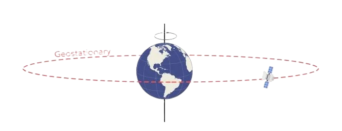
Satélite GOES
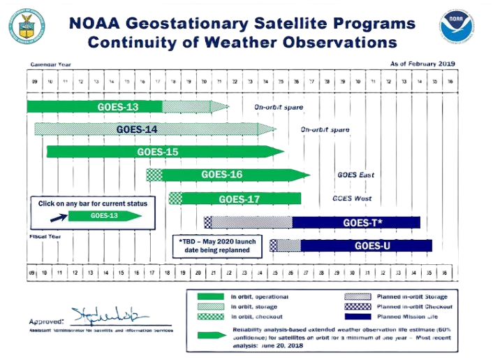
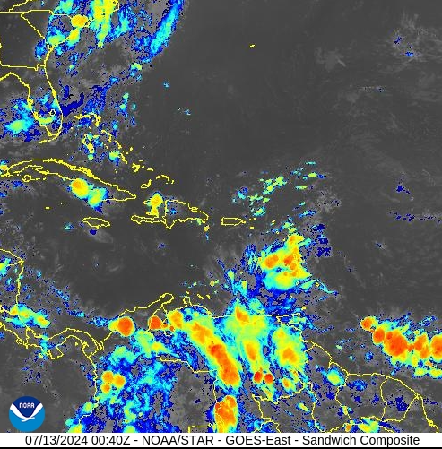
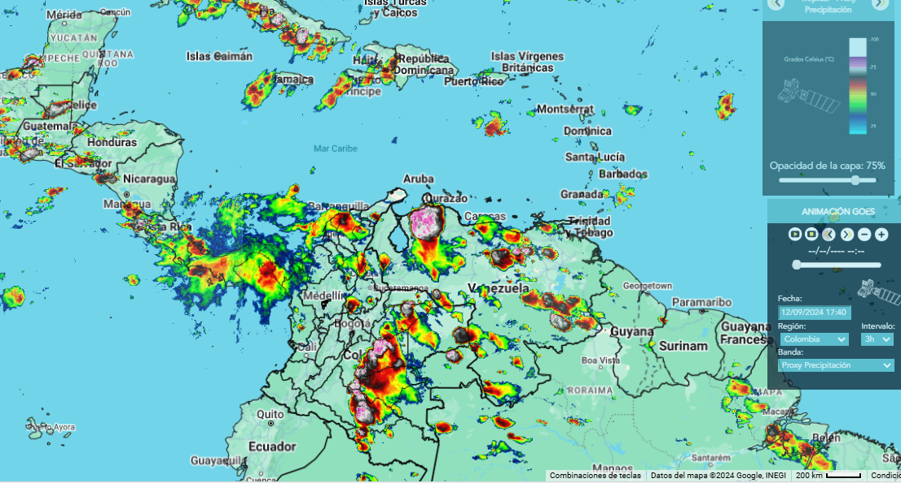
Satélite GOES